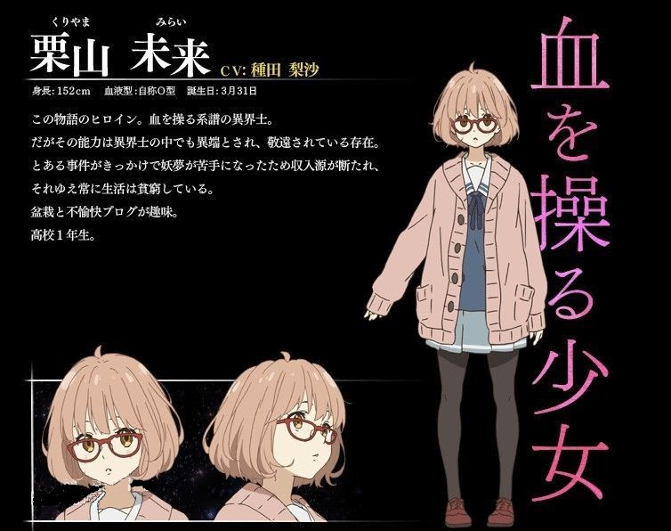
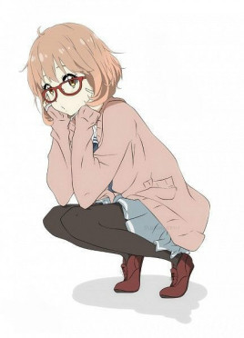
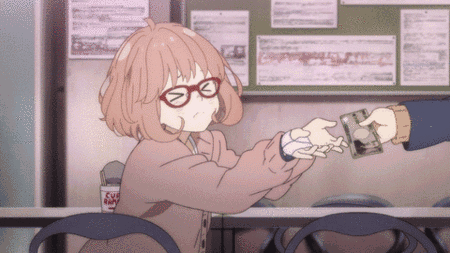
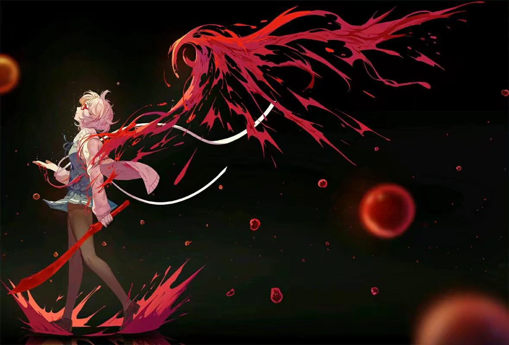
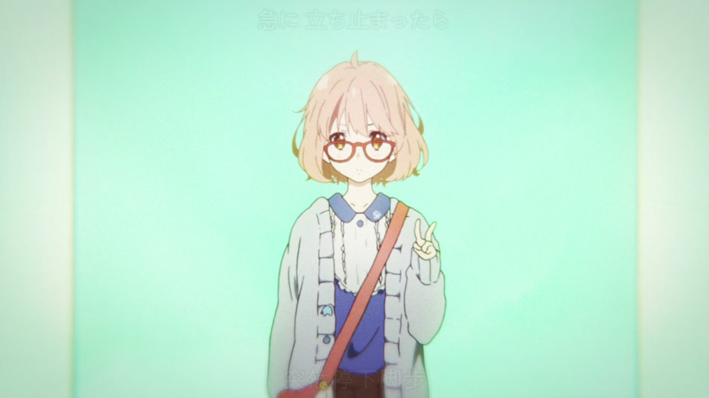
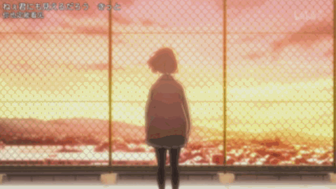

人物介绍 | 详细情况 |
|
|---|---|---|
|  | 人物概况 |
栗山未来是日本轻小说及其改编动画《境界的彼方》中的女主角。 |
角色形象 |
相貌衣着 |
初登场时是带着高中一年级新生特有的深蓝色缎带。
一头蓬松的茶色短发，大镜框眼镜被神原秋人认为很适合戴眼镜，右手上平时缠着绷带。 |
|  | 性格特点 |
（对money的抗性很低） |
↑前辈在说什么呢啊哈 哈哈……哈 |
 | 角色能力 | 拥有操纵血的能力，右手平时缠着绷带，战斗时解开可以用血化成一米左右的太刀。 |
角色经历  | 被委托杀死妖梦“境界的彼方”才来到新城市。通过名濑泉得知神原秋人就是境界的彼方，所以在第一话多次使用血刀捅秋人。但是因为秋人拥有不死的特性，没有大碍。 |
|
| | | 联系作者 |